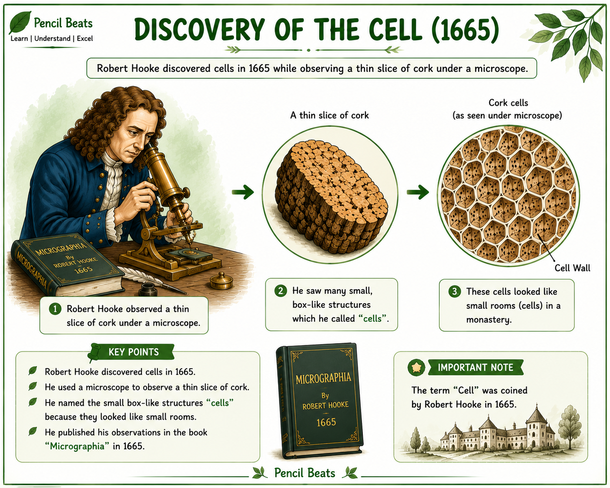

🔬 Discovery of Cell
How scientists first discovered the cell and laid the foundation of modern biology.
Introduction
The discovery of the cell marked one of the greatest milestones in the history of Biology. Before the invention of the microscope, scientists could not observe the tiny structures that make up living organisms. The invention of powerful microscopes opened a completely new world, allowing scientists to study life at the microscopic level. This discovery eventually led to the understanding that every living organism is made up of cells.
In 1665, the English scientist Robert Hooke examined a thin slice of cork under a compound microscope. He observed many tiny box-like compartments that reminded him of the small rooms occupied by monks in a monastery. He called these compartments "cells", a term that is still used today. Although Hooke observed only the dead cell walls of cork, his discovery inspired many scientists to study living cells in greater detail.
After Hooke's discovery, many scientists improved microscope technology and continued studying microscopic organisms. Their work eventually led to the development of the Cell Theory, which states that all living organisms are composed of cells and that the cell is the basic structural and functional unit of life.
📌 Key Points
- Robert Hooke discovered cells in 1665.
- He observed a thin slice of cork using a compound microscope.
- Hooke named the tiny compartments "cells".
- The observed cells were dead cells.
- The discovery of the cell became the foundation of Cell Theory.
📝 Remember
Robert Hooke was the first scientist to use the word "Cell". However, he observed only dead cork cells, not living cells.
🎯 JKBOSE Exam Point
Questions such as "Who discovered the cell?", "When was the cell discovered?", and "Why did Robert Hooke call them cells?" are frequently asked in examinations.

Figure 1.1 — Robert Hooke observing cork under a microscope.
❓ Practice Questions
- Who discovered the cell?
- In which year was the cell discovered?
- Why did Robert Hooke use the term "cell"?
- Which material did Robert Hooke observe under the microscope?
- Why is the discovery of the cell considered important in Biology?